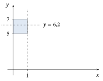
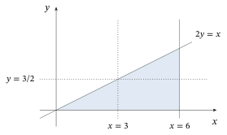

Apêndice AFundamentos Matemáticos
Para entender este livro, é necessário conhecer certos assuntos de matemática, listados a seguir. Como se supõe que o estudante já tenha feito um curso de cálculo, temas como derivadas, integrais e séries infinitas são tratados aqui de forma bem breve. As integrais múltiplas são tratadas com um pouco mais de detalhe.
A.1 Derivadas
Do cálculo, sabemos que a derivada de uma função \(f\) é a sua taxa de variação instantânea: \[ f'(x) = \frac{d}{dx} f(x) = \lim_{h \to 0} \frac{f(x + h) - f(x)}{h}. \]
Em particular, o leitor deve se lembrar, do cálculo, de que \[ \begin{array}{lll} \frac{d}{dx} 5 = 0, \qquad & \frac{d}{dx} x^3 = 3x^2, \qquad & \frac{d}{dx} x^n = n x^{n-1}, \\[8pt] \frac{d}{dx} e^x = e^x, \qquad & \frac{d}{dx} \sin x = \cos x, \qquad & \frac{d}{dx} \cos x = -\sin x, \end{array} \] etc. Assim, se \(f(x) = x^3\), então \(f'(x) = 3x^2\) e, por exemplo, \(f'(7) = 3\;7^2 = 147\).
As derivadas respeitam a soma e a multiplicação por escalar; assim, se \(f\) e \(g\) são funções e \(C\) é uma constante, então \[ \frac{d}{dx} \bigl(C f(x) + g(x)\bigr) = C f'(x) + g'(x). \] Portanto, \[ \frac{d}{dx} (5x^3 - 3x^2 + 7x + 12) = 15x^2 - 6x + 7, \] etc.
Por fim, as derivadas satisfazem uma regra da cadeia: se uma função pode ser escrita como uma composição de duas outras funções, como em \(f(x) = g(h(x))\), então \(f'(x) = g'(h(x))\, h'(x)\). Assim, \begin{align*} &\tfrac{d}{dx} e^{5x} = 5 e^{5x}, \\ &\tfrac{d}{dx} \sin(x^2) = 2x \cos(x^2), \\ &\tfrac{d}{dx} (x^2 + x^3)^5 = 5 (x^2 + x^3)^4 (2x + 3x^2), \end{align*} etc.
As derivadas de ordem superior são definidas por \[ f''(x) = \frac{d}{dx} f'(x), \quad f'''(x) = \frac{d}{dx} f''(x), \] etc. Em geral, a derivada de ordem \(r\), \(f^{(r)}(x)\), pode ser definida por indução, com \(f^{(0)}(x) = f(x)\) e \[ f^{(r)}(x) = \frac{d}{dx} f^{(r-1)}(x) \] para \(r \ge 1\). Assim, se \(f(x) = x^4\), então \(f'(x) = 4x^3\), \(f''(x) = f^{(2)}(x) = 12x^2\), \(f^{(3)}(x) = 24x\), \(f^{(4)}(x) = 24\) etc.
As derivadas são usadas com frequência neste texto.
A.2 Integrais
Se \(f\) é uma função e \(a < b\) são constantes, então a integral de \(f\) no intervalo \([a, b]\), escrita \[ \int_a^b f(x)\, dx, \] representa a soma dos valores \(f(x)\), multiplicados pelas larguras de pequenos intervalos em torno de \(x\). Isto é, \(\int_a^b f(x)\, dx \approx \sum_{i=1}^d f(x_i)(x_i - x_{i-1})\), em que \(a = x_0 < x_1 < \ldots < x_d = b\) e em que \(x_i - x_{i-1}\) é pequeno.
Mais formalmente, podemos tomar \(x_i = a + (i/d)(b - a)\) e fazer \(d \to \infty\), para obter uma definição formal de integral como \[ \int_a^b f(x)\, dx = \lim_{d \to \infty} \sum_{i=1}^d f\bigl(a + (i/d)(b - a)\bigr)\,(1/d). \]
Calcular \(\int_a^b f(x)\, dx\) dessa maneira toda vez seria tedioso. Felizmente, o teorema fundamental do cálculo oferece um jeito muito mais fácil de calcular integrais. Ele diz que, se \(F(x)\) é qualquer função com \(F'(x) = f(x)\), então \(\int_a^b f(x)\, dx = F(b) - F(a)\). Logo, \begin{align*} &\textstyle\int_a^b 3x^2\, dx = b^3 - a^3, \\ &\textstyle\int_a^b x^2\, dx = \frac{1}{3}(b^3 - a^3), \\ &\textstyle\int_a^b x^n\, dx = \frac{1}{n+1}(b^{n+1} - a^{n+1}), \end{align*} e \begin{align*} &\textstyle\int_a^b \cos x\, dx = \sin b - \sin a, \\ &\textstyle\int_a^b \sin x\, dx = -(\cos b - \cos a), \\ &\textstyle\int_a^b e^{5x}\, dx = \frac{1}{5}(e^{5b} - e^{5a}). \end{align*}
A.3 Séries Infinitas
Se \(a_1, a_2, a_3, \ldots\) é uma sequência infinita de números, podemos considerar a soma infinita (ou série) \[ \sum_{i=1}^\infty a_i = a_1 + a_2 + a_3 + \cdots. \] Formalmente, \(\sum_{i=1}^\infty a_i\) \({}= \lim_{N \to \infty} \sum_{i=1}^N a_i\). Essa soma pode ser finita ou infinita.
Por exemplo, é claro que \(\sum_{i=1}^\infty 1\) \({}= 1 + 1 + 1 + 1\) \({}+ \cdots = \infty\). Por outro lado, como \[ \frac{1}{2} + \frac{1}{4} + \frac{1}{8} + \frac{1}{16} + \cdots + \frac{1}{2^n} = \frac{2^n - 1}{2^n}, \] vemos que \[ \frac{1}{2} + \frac{1}{4} + \frac{1}{8} + \frac{1}{16} + \cdots = \sum_{i=1}^\infty \frac{1}{2^i} = \lim_{N \to \infty} \sum_{i=1}^N \frac{1}{2^i} = \lim_{N \to \infty} \frac{2^N - 1}{2^N} = 1. \]
De modo mais geral, calculamos que \[ \sum_{i=1}^\infty a^i = \frac{a}{1 - a} \] sempre que \(\lvert a \rvert < 1\).
Um tipo de série infinita particularmente importante é a série de Taylor1. Se \(f\) é uma função, então a sua série de Taylor é dada por \[ f(0) + x f'(0) + \frac{1}{2!} x^2 f''(0) + \frac{1}{3!} x^3 f^{(3)}(0) + \cdots = \sum_{i=0}^\infty \frac{1}{i!} x^i f^{(i)}(0). \] (Aqui, \(i! = i(i - 1)(i - 2) \cdots (2)(1)\) indica \(i\) fatorial, com \(0! = 1! = 1\), \(2! = 2\), \(3! = 6\), \(4! = 24\) etc.) Em geral, \(f(x)\) será exatamente igual à expansão em série de Taylor; assim,2 \begin{align*} \sin x &= x - x^3/3 + x^5/5 - x^7/7 + \cdots, \\ \cos x &= 1 - x^2/2 + x^4/4 - x^5/5 + \cdots, \\ e^x &= 1 + x + x^2/2! + x^3/3! + x^4/4! + \cdots, \\ e^{5x} &= 1 + 5x + (5x)^2/2! + (5x)^3/3! + (5x)^4/4! + \cdots, \end{align*} etc. Se \(f(x)\) é um polinômio (por exemplo, \(f(x) = x^3 - 3x^2 + 2x - 6\)), então a série de Taylor de \(f(x)\) é exatamente a mesma função que \(f(x)\).
A.4 Multiplicação de Matrizes
Uma matriz é qualquer coleção \(r \times s\) de números, por exemplo, \[ A = \begin{pmatrix} 8 & 6 \\ 5 & 2 \end{pmatrix}, \quad B = \begin{pmatrix} 3 & 6 & 2 \\ -7 & 6 & 0 \end{pmatrix}, \quad C = \begin{pmatrix} 2 & -1 \\ 3/5 & 2/5 \\ -0{,}6 & -17{,}9 \end{pmatrix}, \] etc.
As matrizes podem ser multiplicadas da seguinte maneira. Se \(A\) é uma matriz \(r \times s\) e \(B\) é uma matriz \(s \times u\), então o produto \(AB\) é uma matriz \(r \times u\) cuja entrada \(i, j\) é dada por \(\sum_{k=1}^s A_{ik} B_{kj}\), uma soma de produtos. Por exemplo, com \(A\) e \(B\) como acima, se \(M = AB\), então \begin{align*} M &= \begin{pmatrix} 8 & 6 \\ 5 & 2 \end{pmatrix} \begin{pmatrix} 3 & 6 & 2 \\ -7 & 6 & 0 \end{pmatrix} \\ &= \begin{pmatrix} 8(3) + 6(-7) & 8(6) + 6(6) & 8(2) + 6(0) \\ 5(3) + 2(-7) & 5(6) + 2(6) & 5(2) + 2(0) \end{pmatrix} = \begin{pmatrix} -18 & 84 & 16 \\ 1 & 42 & 10 \end{pmatrix}, \end{align*} já que, por exemplo, a entrada \((2, 1)\) de \(M\) é igual a \(5(3) + 2(-7) = 1\).
A multiplicação de matrizes acaba sendo surpreendentemente útil e é usada em vários pontos deste livro.
A.5 Derivadas Parciais
Suponha que \(f\) seja uma função de duas variáveis, como em \(f(x, y) = 3x^2 y^3\). Então podemos tomar uma derivada parcial de \(f\) em relação a \(x\), escrita \[ \frac{\partial}{\partial x} f(x, y), \] variando \(x\) enquanto mantemos \(y\) fixo. Isto é, \[ \frac{\partial}{\partial x} f(x, y) = \lim_{h \to 0} \frac{f(x + h, y) - f(x, y)}{h}. \]
Ela pode ser calculada simplesmente tratando \(y\) como um valor constante. No exemplo acima, \[ \frac{\partial}{\partial x} (3x^2 y^3) = 6x y^3. \] Da mesma forma, tratando \(x\) como constante e variando \(y\), vemos que \[ \frac{\partial}{\partial y} (3x^2 y^3) = 9x^2 y^2. \]
Outros exemplos são3 \begin{align*} \frac{\partial}{\partial x} \bigl(18 e^{xy} + x^6 y^8 - \sin(y^3)\bigr) &= 18 y e^{xy} + 6x^5 y^8, \\ \frac{\partial}{\partial y} \bigl(18 e^{xy} + x^6 y^8 - \sin(y^3)\bigr) &= 18 x e^{xy} + 8x^6 y^7 - 3y^2 \sin(y^3), \end{align*} etc.
Se \(f\) é uma função de três ou mais variáveis, as derivadas parciais podem ser tomadas do mesmo modo. Assim, \[ \frac{\partial}{\partial x} (x^2 y^4 z^6) = 2x y^4 z^6, \quad \frac{\partial}{\partial y} (x^2 y^4 z^6) = 4x^2 y^3 z^6, \quad \frac{\partial}{\partial z} (x^2 y^4 z^6) = 6x^2 y^4 z^5, \] etc.
A.6 Integrais Múltiplas
Se \(f\) é uma função de duas ou mais variáveis, ainda podemos calcular integrais de \(f\). Porém, em vez de tomar integrais num intervalo \([a, b]\), precisamos tomar integrais em regiões de dimensão maior.
Por exemplo, seja \(f(x, y) = x^2 y^3\) e seja \(R\) a região retangular dada por \(R = \{0 \le x \le 1, 5 \le y \le 7\}\) \({}= [0, 1] \times [5, 7]\). Quanto vale \[ \int_R \int f(x, y)\, dx\, dy, \] a integral de \(f\) na região \(R\)? Em termos geométricos, é o volume sob o gráfico de \(f\) (que é uma superfície) acima da região \(R\). Mas como calculamos isso?
Bem, se \(y\) é constante, sabemos que \begin{equation} \int_0^1 f(x, y)\, dx = \int_0^1 x^2 y^3\, dx = \frac{1}{3} y^3. \tag{A.6.1} \end{equation} Isso corresponde a somar os valores de \(f\) ao longo de uma “faixa” da região \(R\), na qual \(y\) é constante. Na Figura A.6.1, mostramos a região de integração \(R = [0, 1] \times [5, 7]\). O valor de (A.6.1), quando \(y = 6{,}2\), é \((6{,}2)^3/3 = 79{,}443\); essa é a área sob a curva \(x^2 (6{,}2)^3\) acima do segmento \([0, 1] \times \{6{,}2\}\).

Se então somarmos os valores das áreas sobre essas faixas ao longo de todos os valores possíveis de \(y\), obtemos a integral total, ou volume, da seguinte maneira: \begin{align*} \int_R \int f(x, y)\, dx\, dy &= \int_5^7 \Bigl(\int_0^1 f(x, y)\, dx\Bigr)\, dy = \int_5^7 \Bigl(\int_0^1 x^2 y^3\, dx\Bigr)\, dy \\ &= \int_5^7 \Bigl(\frac{1}{3} y^3\Bigr)\, dy = \frac{1}{3}\,\frac{1}{4}(7^4 - 5^4) = 148. \end{align*} Assim, o volume sob o gráfico de \(f\) e acima da região \(R\) é igual a \(148\).
Observe que também podemos calcular essa integral integrando primeiro em \(y\) e depois em \(x\), e obtemos a mesma resposta: \begin{align*} \int_R \int f(x, y)\, dx\, dy &= \int_0^1 \Bigl(\int_5^7 f(x, y)\, dy\Bigr)\, dx = \int_0^1 \Bigl(\int_5^7 x^2 y^3\, dy\Bigr)\, dx \\ &= \int_0^1 \Bigl(\frac{1}{4} x^2 (7^4 - 5^4)\Bigr)\, dx = \frac{1}{3}\,\frac{1}{4}(7^4 - 5^4) = 148. \end{align*}
Regiões Não Retangulares
Se a região \(R\) não é um retângulo, o cálculo é mais complicado. A ideia é que, para cada valor de \(x\), integramos \(y\) apenas nos valores para os quais o ponto \((x, y)\) está dentro de \(R\).
Por exemplo, suponha que \(R\) seja o triângulo dado por \(R = \{(x, y) : 0 \le 2y \le x \le 6\}\). Na Figura A.6.2, representamos essa região junto com os cortes em \(x = 3\) e \(y = 3/2\). Usamos os cortes em \(x\) para determinar os limites de \(y\) para \(x\) fixo quando integramos primeiro em \(y\); usamos os cortes em \(y\) para determinar os limites de \(x\) para \(y\) fixo quando integramos primeiro em \(x\).

Então \(x\) pode assumir qualquer valor entre \(0\) e \(6\). Porém, uma vez conhecido \(x\), \(y\) só pode assumir valores entre \(0\) e \(x/2\). Logo, se \(f(x, y) = xy + x^6 y^8\), então \begin{align*} &\int_R \int f(x, y)\, dx\, dy \\ &= \int_0^6 \Bigl(\int_0^{x/2} f(x, y)\, dy\Bigr)\, dx = \int_0^6 \Bigl(\int_0^{x/2} (xy + x^6 y^8)\, dy\Bigr)\, dx \\ &= \int_0^6 \Bigl(x \frac{1}{2}\bigl((x/2)^2 - 0^2\bigr) + \bigl(x^6 \frac{1}{9}\bigl((x/2)^9 - 0^9\bigr)\bigr)\Bigr)\, dx \\ &= \int_0^6 \Bigl(\frac{1}{8} x^3 + \frac{1}{4608} x^{15}\Bigr)\, dx \\ &= \frac{1}{8}\,\frac{1}{4}(6^4 - 0^4) + \frac{1}{4608}\,\frac{1}{16}(6^{16} - 0^{16}) \\ &= 3{,}8264 \times 10^7. \end{align*}
Mais uma vez, podemos calcular a mesma integral na ordem inversa, integrando primeiro em \(x\) e depois em \(y\). Nesse caso, \(y\) pode assumir qualquer valor entre \(0\) e \(3\). Então, para um dado valor de \(y\), vemos que \(x\) pode assumir valores entre \(0\) e \(2y\). Logo,4 \[ \int_R \int f(x, y)\, dx\, dy = \int_0^3 \Bigl(\int_{2y}^6 f(x, y)\, dx\Bigr)\, dy = \int_0^3 \Bigl(\int_{2y}^6 (xy + x^6 y^8)\, dx\Bigr)\, dy. \] Deixamos como exercício para o leitor terminar esta integral e verificar que se obtém a mesma resposta de antes.
Funções de três ou mais variáveis também podem ser integradas em regiões da dimensão correspondente, três ou maior. Para simplificar, não damos ênfase a essas integrais de ordem superior neste livro.
Notas do capítulo
- Termo série de Taylor — no original, Taylor series ↩
- Nota do tradutor O original traz estas duas séries assim; pela fórmula de Taylor acima seriam \(\sin x = x - x^3/3!\) \({}+ x^5/5! - x^7/7!\) \({}+ \cdots\) e \(\cos x = 1 - x^2/2!\) \({}+ x^4/4! - x^6/6!\) \({}+ \cdots\). ↩
- Nota do tradutor O original traz \(-3y^2 \sin(y^3)\) no fim da segunda linha; pela conta seria \(-3y^2 \cos(y^3)\). ↩
- Nota do tradutor O original traz “entre 0 e \(2y\)”; pela região e pelos limites da integral abaixo, seria entre \(2y\) e \(6\). ↩